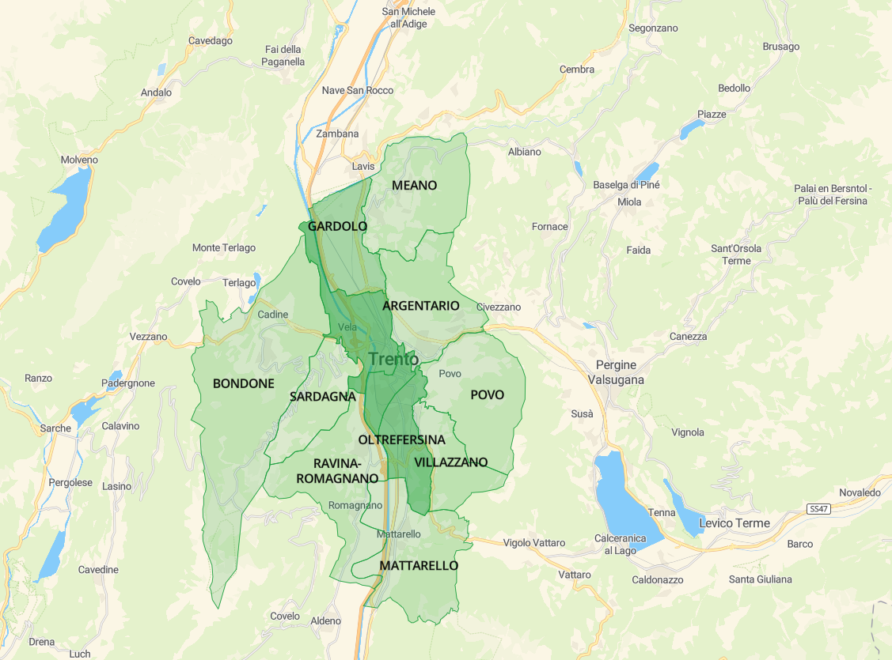

The following website shows summary information about the trees in the city of Trento. According to these data, users can use the above menù to visualize comparisons, distributions and timelines of the trees. If you need information or support, visit the apposite section.
